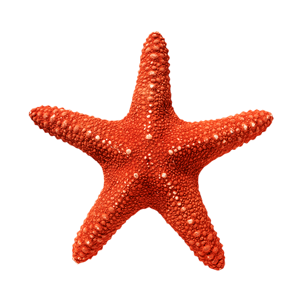
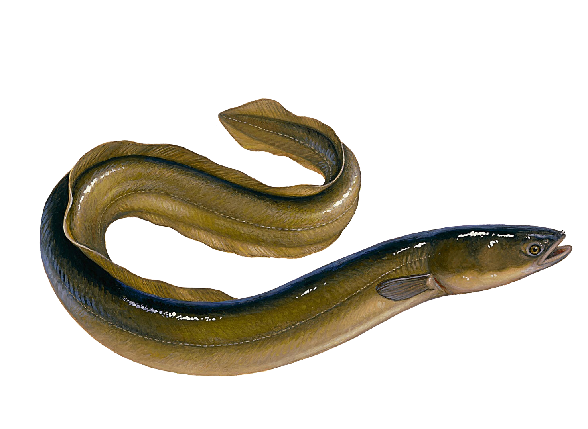

-
5m 이내
해마
대한민국 바다에서 사는 해마(海馬)란 명칭은 넓은 의미로는 실고기과에 속하는 해마속(영어: seahorse 또는 Hippocampus) 어류의 총칭, 좁은 의미로는 한국해역 특히 독도에 발견되는 해마속 어류의 대표종인 해마(영어: Korean seahorse 또는 Hippocampus haema)를 지칭한다.
-
20m 이내
불가사리
불가사리는 성게, 해삼과 같이 극피동물문에 속한다. 이 극피동물문은 후구동물의 한 계통으로서 후구동물에는 인간이 포함된 척삭동물 계보가 속해있다. 생김새나 행동 양식만 놓고 보면 불가사리는 인간과 굉장히 먼 관계로 보이고 우리가 일반적으로 볼때 불가사리보다는 오징어나 문어와 같은 두족류들이 비교적 인간과 훨씬 더 가까워 보이나, 절지동물과 연체동물이 인간과 아예 다른 선구동물 계보에 속하는 것과 달리 이들은 인간과 같은 후구동물 계보에 속한다. 즉 유전적으로 인간은 두족류보다 불가사리와 유연 관계가 더 가깝다.
-
50m 이내
갯장어
몸이 뱀장어처럼 길어 120-200cm에 달한다. 주둥이는 길고 입은 몹시 크며 앞쪽에 날카로운 송곳니가 있다. 위턱이 아래턱보다 약간 앞쪽으로 튀어나와 있고, 양쪽에는 2~3줄로 된 이빨이 있다. 앞쪽에는 억세고 긴 송곳니가 있다. 배지느러미는 없고 몸빛은 등쪽이 회갈색, 배쪽은 은백색인데, 등지느러미와 뒷지느러미의 끝이 검다.
-
500m
돌고래
돌고래(문화어: 곱등어, 영어: dolphin)는 수생 포유류이자 이빨고래류의 한 종류로, 바다에 사는 매우 영리한 포유동물이다. 돌고래는 아가미로 숨을 쉬는 물고기와는 달리 허파로 숨을 쉬기 때문에 숨을 들이쉴 때마다 물 위로 나와서 허파에 공기를 가득 채운다. 돌고래는 주로 새우나 멸치, 정어리 같은 작은 물고기를 먹는다.
-
2,197m

대왕오징어
대왕오징어(大王오징어, 영어: giant squid)는 북대서양, 뉴질랜드, 북태평양 등지에서 발견되는 오징어이다. 학명은 Architeuthis dux(Steenstrup, 1857)이다. Architeuthis는 지배하는 오징어라는 뜻이다. 연체동물문의 두족강, 오징어목, 대왕오징어과에 속한다. 크기는 12m~15m (39ft~50ft), 최대 20m (65ft), 몸무게 1톤의 대형종이며, 약 600~1,500m의 심해에 주로 서식한다. 덩치가 큰 오징어류가 다 그렇듯이 몸에 부력을 얻기 위한 염화 암모늄이 다량 포함되어있어 알싸한 맛이 나기 때문에 식용으로는 이용되지 않는다.
-
2,500m

고래
고래는 고래하목에 속하는 포유류의 총칭으로, 수염고래류와 이빨고래류으로 나뉜다. 고래류는 유선형 몸체에 수평 꼬리지느러미 및 머리 꼭대기에 분수공이 있는 매우 큰 해양 포유동물이다. 앞다리는 지느러미로 진화하였다.